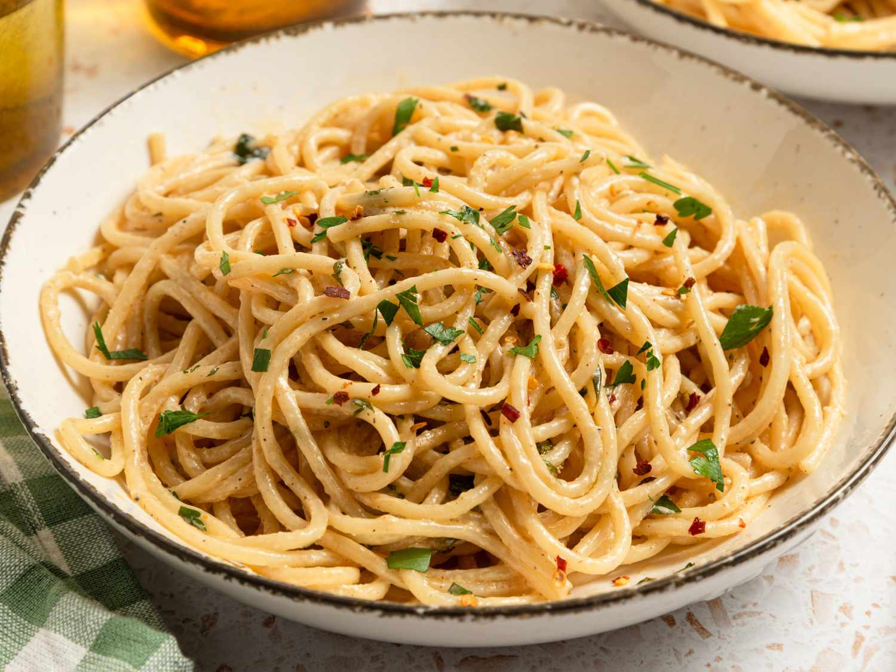

Cowboy Butter Spaghetti

Description
A classic Western dish that combines spicy compound butter and cream into a delicious sauce to mix with buttered noodles.
Ingredients
- 1/2 cup salted butter, softened
- 2 tablespoons brown or grainy mustard
- 2 tablespoons chopped parsley
- 4 teaspoons fresh thyme
- 2 teaspoons lemon juice
- 1 teaspoon smoked paprika
- 1/2 teaspoon kosher salt
- 1/4 teaspoon freshly ground black pepper
- 1 pinch cayenne pepper
- 1 pinch red chili flakes
- 1 poind spaghetti
- 1 1/2 cups heavy cream
- 1 teaspoon lemon juice
- 1/8 teaspoon garlic salt
- 1 pinch red pepper flakes
- chopped parsley for garnish
Steps
-
Gather all ingredients.
-
Combine butter, brown mustard, parsley, thyme, lemon juice, paprika, salt, black pepper, cayenne, and red chili flakes in a bowl and mix with a spatula until fully combined.
-
Scrape the mixed butter to the middle of the bowl to form a mound. Set aside to use immediately, or for best results, to allow the flavors to meld, cover in plastic wrap and refrigerate for 2 hours or up to overnight.
-
Bring a large pot of lightly salted water to a boil. Cook spaghetti in the boiling water, stirring occasionally, until tender yet firm to the bite, about 12 minutes. Reserve 1/4 cup pasta water, then drain spaghetti. Set aside.
-
Meanwhile, melt butter in a large saucepan over medium-low heat. Add cream, lemon juice, garlic salt, and red pepper flakes, and heat until steaming, about 5 minutes.
-
Stir in spaghetti, and add reserved pasta water as needed to thin sauce.
-
Season to taste with salt. Serve spaghetti in bowls; garnish with parsley.
Home